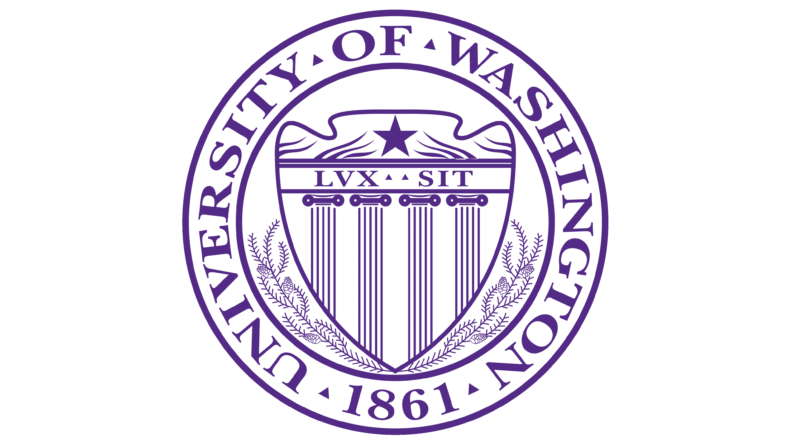

University of Washington
M.S. in Electrical & Computer Engineering | GPA: 3.8/4.0
MEMS, Solid-State Electronics, Optoelectronic Materials, Microfabrication, Integrated Circuit Technology, Silicon Photonics, Database Systems
Resume & Supporting Documents
Graduate student in Electrical & Computer Engineering at the University of Washington, based in Seattle, WA.

Education
M.S. in Electrical & Computer Engineering | GPA: 3.8/4.0
MEMS, Solid-State Electronics, Optoelectronic Materials, Microfabrication, Integrated Circuit Technology, Silicon Photonics, Database Systems
B.S. in Electronic Engineering & Computer Science | GPA: 3.7/4.0
Nano-electronics, Semiconductor Devices/Physics, Electronics, Circuit Theory, Java, Digital Systems, Logic Design, Signal Integrity
Technical Skills
Experience
Low Power Magnetic Linear Actuator
Graduate Researcher
Microfabrication Project
Flexible MEMS Pressure Sensor
Undergraduate Researcher
Documents
Full resume with education, technical skills, research experience, and project details.
Training certificate supporting hands-on semiconductor process and fabrication preparation.
SolidWorks certificate demonstrating CAD modeling competency for engineering design workflows.
Six Sigma White Belt certification aligned with process improvement and quality fundamentals.